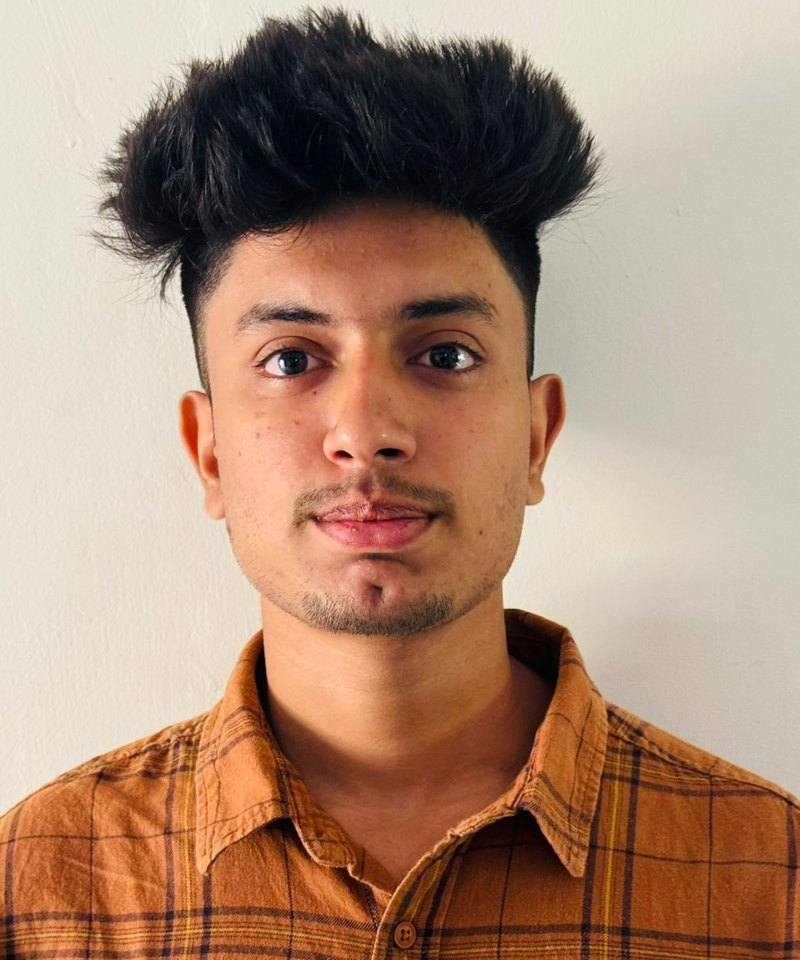

Plan · Check · Pour✦Hello!
I’m Sayed Aabidali
& I’m a site engineer in training.
& I’m a site engineer in training.
Civil engineering student at KLE Technological University, 7th semester, B division, following one simulated project — a seven-block shopping mall — from site layout through to quality control.
On the course’s contractor site team, each problem statement covers a decision a site engineer has to make. Every page keeps observations, rules or good practice, and proposals apart.
Student file: USN 01FE22BCV083Roll no. 2497th sem · B divSchool of Civil EngineeringKLE Tech
✦Problem statements
PS1 is the group’s submitted work. PS2–PS6 build on it — their targets and plans are proposals, not achieved results.
PS-01 · Sheet 1 of 6 · GroupSite layout, approvals & concrete supplyTwo-phase layout, RERA & approvals, labour welfare, RMC vs on-site batching, QC tests
PS-02 · Sheet 2 of 6 · IndividualMaterial procurement, QC, storage & accountsIndent-to-payment, vendors, inspection, invoices, stores, gates, QC, 15-day readiness plan
PS-03 · Sheet 3 of 6 · IndividualSurveying plan & benchmark controlControl network, benchmarks, consultant visits, setting-out, QA hold points, in-house checks
PS-04 · Sheet 4 of 6 · IndividualSteel & formwork wastage controlWastage basis, BBS & cutting optimisation, ordering, reconciliation, formwork ≥10 cycles
PS-05 · Sheet 5 of 6 · IndividualLabour planning & concrete-based manpowerMan-day method, peak & slack, wages, labour contracts
PS-06 · Sheet 6 of 6 · IndividualCube test failures — investigation & prevention23 of 56 failed results, containment, fishbone & 5-Why, RACI, CAPA, RMC precautions
✦Site visits
03 / 09 / 2026Laxmi Nagar site, HubballiMulti-storey RCC frame under construction; team met a practising structural engineer on permissions, layout, RMC vs on-site casting and temporary utilities.
PS1 layoutTwo-phase site planBlocks 1–5 in Phase 1, blocks 6–7 in Phase 2; Gate 1 entry, Gate 2 exit.
✦Topics
Site layoutApprovals & RERABOCW welfareRMC vs batchingSite testing labProcurement & storesSurvey controlBBSFormwork reuseManpower planningConcrete QA/QC
✦The project
8ac
Site area7
Interconnected blocks~12k
m³ concrete (prelim.)3
Underground parking levelsPS1 groupVikas B · Pratham Jaganur · Abhinav Gadad · Sabir Shabdi · Sayed Aabidali
✦Contact
Open to internships in site execution, planning and quality control.
✉01fe22bcv083@kletech.ac.in ☏8618744322